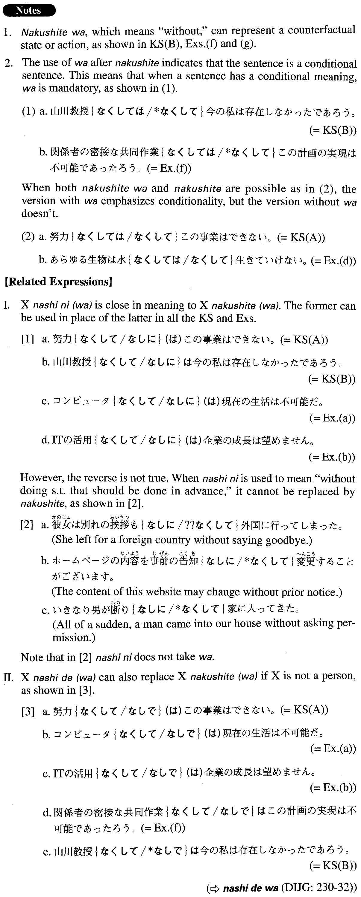

なくして（は） (A. 315)
- (ksa).
- 努力なくして（は）この事業はできない。
- Without effort we won't be able to finish this undertaking.
- (ksb).
- 山川教授なくしては今の私は存在しなかったであろう。
- Without Professor Yamakawa, I wouldn't be what I am now.
- (a).
- コンピュータなくして現在の生活は不可能だ。
- Without computers, our current lifestyle would be impossible.
- (b).
- ITの活用なくして企業の成長は望めません。
- If we don't make good use of IT, we can't expect our business to grow.
- (c).
- 日本の平和と繁栄は、世界の平和と安定なくしてはあり得ない。
- Peace and prosperity in Japan is not possible without peace and stability throughout the world.
- (d).
- あらゆる生物は水なくして生きていけない。
- No creature can live without water.
- (e).
- コミュニケーションなくしては、人間が関与する一切の活動は成立し得ない。
- Without communication, no human activity could occur.
- (f).
- 関係者の密接な共同作業なくしてはこの計画の実現は不可能であったろう。
- If it had not been for the close cooperation of the people involved in this project, it would have been impossible to make it a reality.
- (g).
- 沿道の人たちの声援なくしては、このマラソンは完走できなかったでしょう。
- Without encouragement from the roadside people, I couldn't have finished running this marathon.
